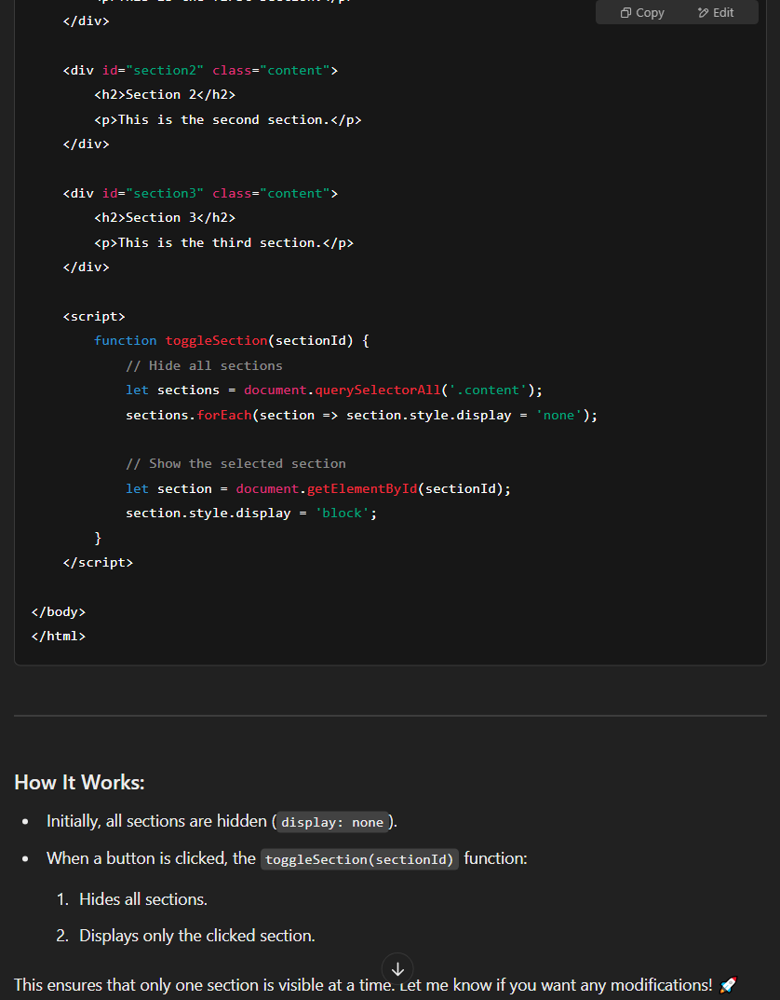

My biggest hobby is definitely playing video games. This includes arcade rhythm games, mobile games, role playing games, FPS games, RTS, but the one genre I cannot escape is competitive video games.
I have reached the top .001% in Overwatch and Teamfight Tactics, and I am currently only Celestial II in Marvel Rivals (top ~0.50%) since I have not played ranked much.
The competitive games that I enjoy are:
Marvel Rivals - A Third Person Hero Shooter where you play a 6v6 game where you try to capture or push an objective, featuring heroes and villains from Marvel.
Overwatch - A First Person Hero Shooter where you also push or capture objectives, but features original characters by Blizzard, known for World of Warcraft and Diablo.
Teamfight Tactics - An 8 player Free-for-all auto chess game where you battle to be first place or top 4, featuring Riot Game's League of Legends characters.
Valorant- A First Person Tactical shooter, where you either eliminate the enemy, successfully plant a spike, or defuse a spike, by Riot Games.
Tekken 8 - A 3D fighting game featuring original characters from representing a multitude of cultures who somehow understand each other while speaking different languages, by Bandai Namco
Just a simple clip of me getting dash resets as Marvel Rival's Black Panther.
About Me
I am currently the Lead Teaching Assistant for all of ITSC 2214, Data Structures and Algorithms. I am currently doing undergraduate research with Dr. Yonghong Yan and I am developing a Treatment Planning System website to perform
radiation
simulations, beam calculations, plan generations, plan optimizations, and dose calculations for cancer research and radiation therapy.
I plan to start streaming on Twitch again, and go by heybedhead.
I started playing competitive video games when I was in about 16 in High School (2015, yeah I'm a little old). I was never good until I built and bought my first ever PC at 19 years old, which I'm sure every gamer who can relate remembers.
I built a PC with a 1060 GPU, AMD Ryzen 2600 with the fan halfway screwed in, and immediately started playing Overwatch. I still was not great, and I also ended up playing Valorant when that came out, but after some time of playing both games,
I started developing a lot of game sense, hitting Immortal in Valorant and top 500 in Overwatch. That cost me 7 years of failed community college, but grew my brain so much that I have done so well in University (ironically except literally this class)
I developed my critical thinking skills so much, and also made amazing life long friends, and I have played with some of my favorite streamers and pros. I don't even regret failing school, because I would never have gotten this far.
Simple 4k as Black Panther, one of my favorite characters to play
Best Times
Playing with Streamers and Pros
Some of my best moments are when I got into Overwatch games with streamers and pros that I watched:
xQc
Sleepy
LiNkzr
Kabaji
m0xyy
Crimzo
Somjuu
Space
Kevin Durant
Rank Achievements
My favorite ranked achievements are when I hit:
Top 125 in Overwatch (rank 152 shown)
Grandmaster in Teamfight Tactics (top 750)
When I hit rank 152 for the first time (peaked at 125) on Overwatch.When I hit Grandmaster (top 750) on Teamfight Tactics.
My Marvel Rivals stats this season. I can also play Starlord/Hela/Punisher/BP/Namor at this level but Bucky was too free.
Why You Should Climb
Critical Thinking Skills
One of the best things out of climbing into the highest ranks in video games is that you have to push yourself to problem solve, because every game is different.
A lot of people think these games are about mechanics, skill, and aim, when a way bigger portion is the ability to understand the fundamentals, manipulate those fundamentals and players
while also constantly figuring out how to win every fight, every round, and every game. Map rotations, cooldown cycling, tempo, ability tracking... There are so many concepts to learn and
master that will take your gameplay and skills to the next level.
These games are essentially Data Structures & Algorithms or LeetCode problems. They are not just aim simulators.
Modesty & The Path to Learning
The only real way to grow and climb is to stop blaming your teammates, and focus on yourself, EVEN if a loss WAS because of someone else!
Some people never figure this out, and this is also reflected in the real world. So many people are unable to take accountability for their own actions,
and they find some excuse, someone or something to blame, when at the end of the day there is always something we can do better. Thats why I recommend
learning to climb or grow in competitive settings, whether its sports or video games, you eventually need to focus on yourself!
When I first hit Celestial II on Marvel Rivals.
How to Climb
Learn From Yourself
One important aspect in improvement is learning from your mistakes. This means rewatching your gameplay and noting what you could do better or what other things you
can try. This is called VOD Reviewing. Having other people do this with you helps too!
Learn From Others
Another strategy I used is to watch good streamers and coaches, and try to understand their habits and pick up their tips. I just try to learn at least one thing each time
I watch a stream. It's hard to try to learn a bunch at once and also incorporate it into your gameplay.
Embrace Open Mindedness
Sometimes people who are not high ranked also have good perspectives. Also, sometimes you have to break the proper "fundamentals" in order to win games, and this applies
heavily in very high elo. How else can you outbrain amazing players who also have mastered the fundamentals?
My current Marvel Rivals Profile, I have only 12 hours this season with a 70% winrate on duelist.
My AI Prompts
My Prompts:
How do I hide my HTML sections so that only a section that is clicked on is displayed? I think I know about an onclick method?
What if I have a const sections and we pass through 'section', and for every section I remove 'active (lets let active be the class name).
By default one section will be active at the start (and only one always). If I click another section then it should make that section active while the others hidden.
Response:
First image of my AI Prompt to ChatGPT on hiding sections.

Second image of my AI Prompt to ChatGPT on hiding sections.Third image of my AI Prompt to ChatGPT on hiding sections.